01
Tattoos in elke stijl
Kleur of zwart-grijs, klein of een volledige mouw. Ook cover-ups en tattoos over littekens bespreken we graag met je.
Ana tekent je ontwerp, Niels zet het. Van een fijne bloem in aquarel tot een volledige mouw in black & grey: alles wordt eerst voor jou getekend.
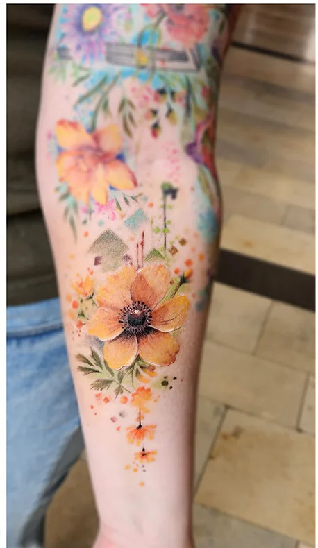
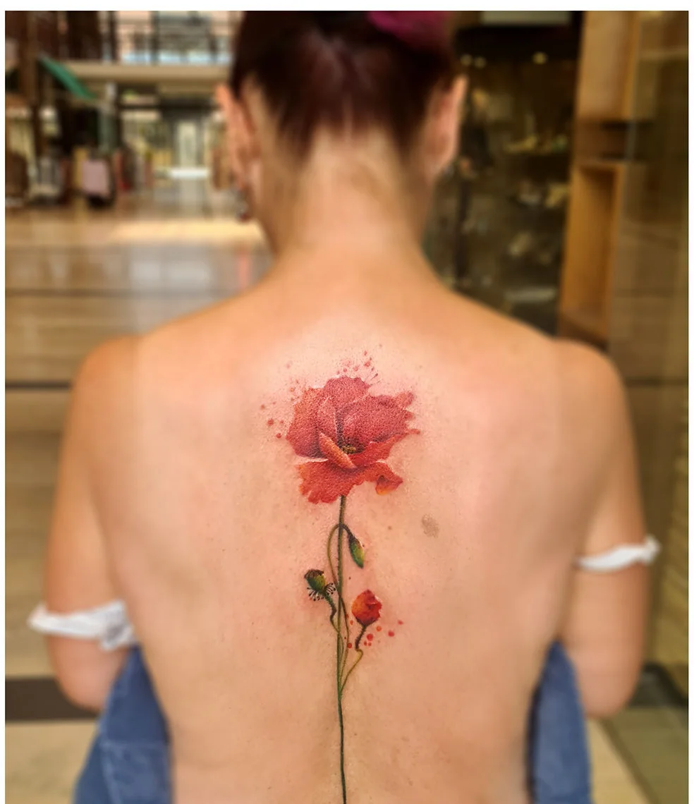
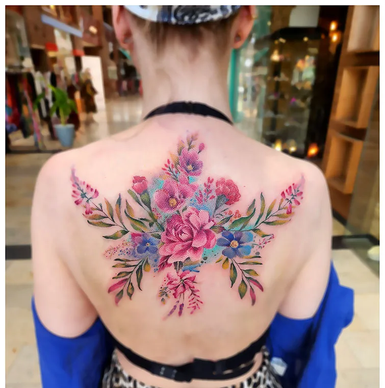
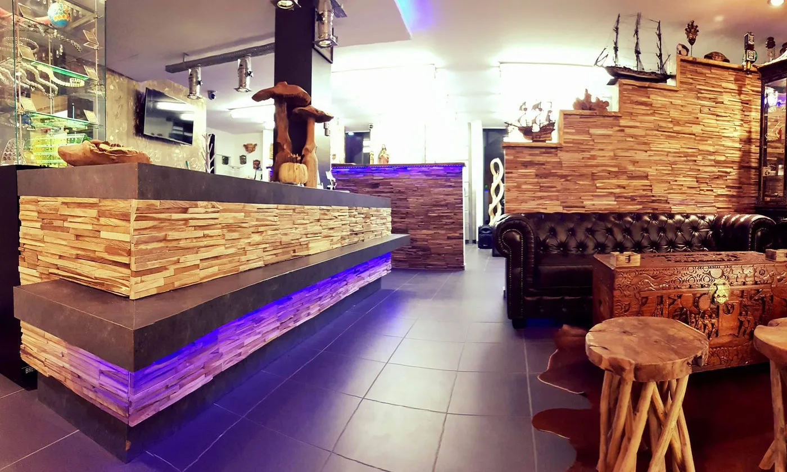
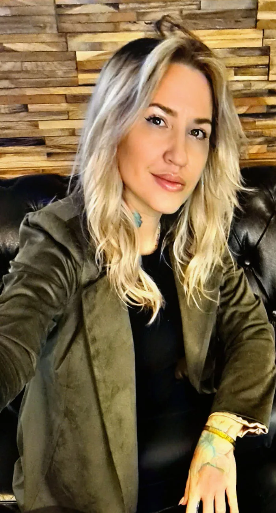
Wij zijn Niels en Ana. We werken elke dag naast elkaar en dat merk je aan het resultaat: Ana werkt je idee uit tot een ontwerp, Niels zet het met de naald.
Niels voelt zich thuis in elke stijl: black & grey, Japans, realisme, aquarel. Ana tekent alles op maat, en laat je met een fotomontage eerst zien hoe het op je lichaam staat.
Give us your skin, and we'll give you our soul.Niels & Ana
Een tattoo laten zetten, een piercing, een oude tattoo laten vervagen of gewoon binnenwippen voor een juweel met een steen die je aanspreekt. Het kan allemaal onder één dak.
Kleur of zwart-grijs, klein of een volledige mouw. Ook cover-ups en tattoos over littekens bespreken we graag met je.
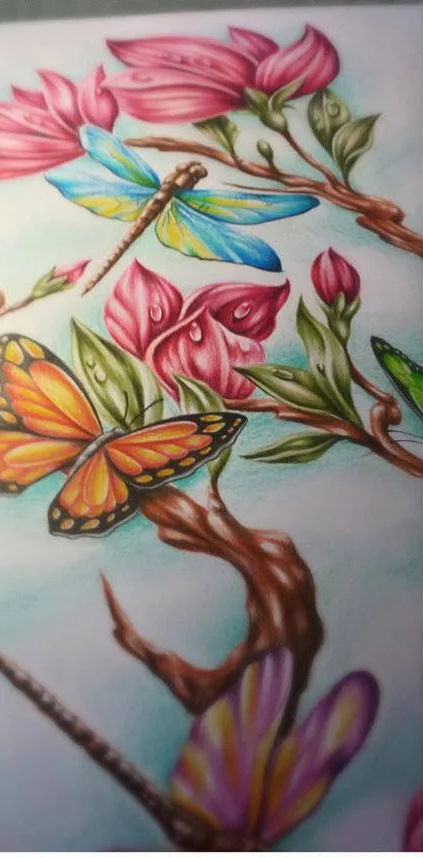
Breng schetsen of voorbeelden mee. Ana tekent er jouw ontwerp van en toont het eerst als montage op je huid.
Agata is gespecialiseerd in piercing en het laten vervagen van oude tattoos, bijvoorbeeld zodat er later een mooie cover-up over kan. Ook voor info over permanente make-up bel je haar.
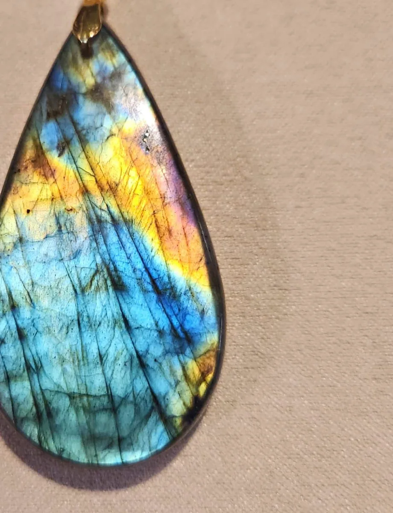
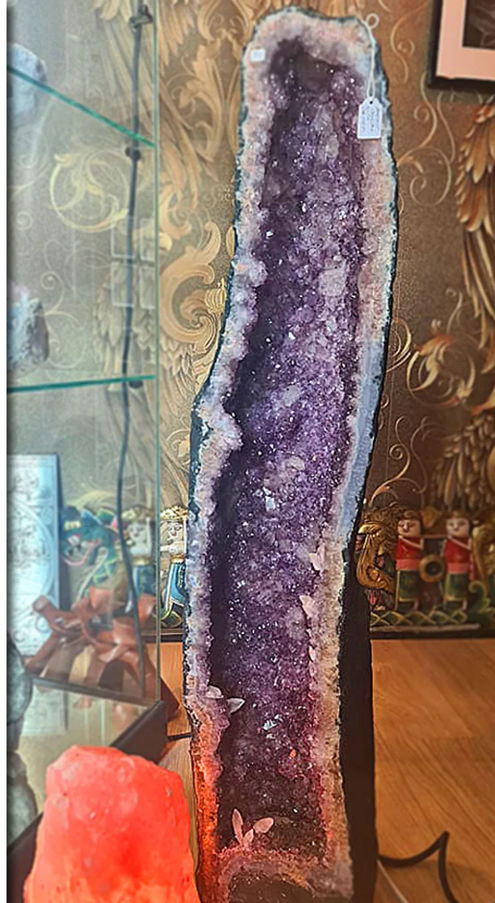
Ana maakt zelf juwelen, elk stuk uniek. Daarnaast vind je in de winkel kristallen, geodes en mineralen. Een stuk reserveren kan met een berichtje.
Veel van deze tattoos dragen een herinnering aan iemand. Daarom tekenen we ze nooit twee keer hetzelfde.
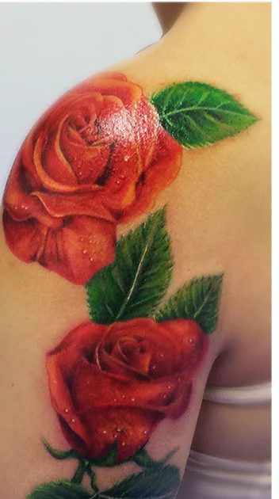
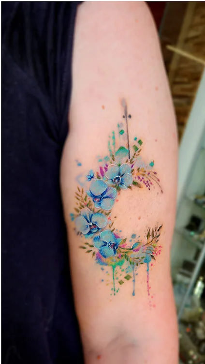
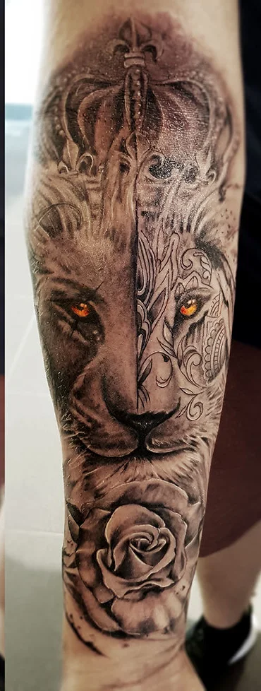
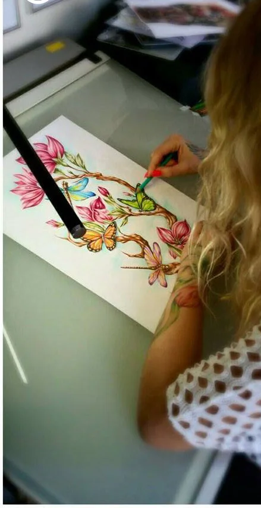
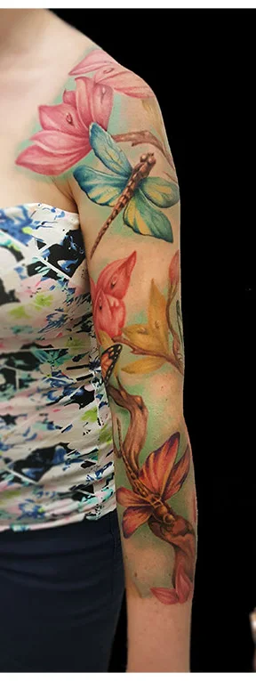
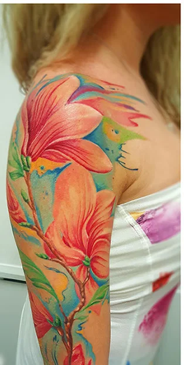
Bel ons voor je langskomt. Dan geven we je meteen alle info die je nodig hebt.
Schetsen, foto's, iets wat je online zag. Alles helpt om te voelen wat je zoekt.
Je ontwerp wordt helemaal voor jou gemaakt en je ziet het eerst als montage op je lichaam.
In een rustige studio, op je afspraak. En je gaat naar huis met uitleg over de nazorg.
Super content met mijn tattoo. Jullie zijn een geweldig team. Knap werk en super vriendelijk. Bedankt voor deze fijne ervaring :)
Ana en Niels, jullie zijn een koppel die prachtig werk verrichten! Niets is jullie teveel.
Rootenstraat 25 bus 3
3600 Genk
Ik maakte deze demo voor jullie om te tonen wat er kan. Na een kort gesprek maak ik er iets veel persoonlijkers van, helemaal naar jullie wens.
Vrijblijvend. Ik kom langs of we bellen.
Op maat, op jullie eigen domein.
Geen voorschot. Jullie betalen pas als alles klaar is.
Hosting, domeinnaam en kleine wijzigingen, zoals nieuwe openingsuren.
Omdat een voorbeeld meer zegt dan een mail. Zo zien jullie meteen wat er kan, en het kost jullie niets.
Nee. Het gesprek is vrijblijvend. Vinden jullie het niks, dan is het daarmee gedaan.
Na ons gesprek staat jullie site binnen 10 tot 14 dagen online.
Zeker. Jullie domeinnaam kan gewoon blijven, de nieuwe site komt in de plaats van de oude.
Nee, dat doe ik op basis van ons gesprek. Eigen foto's zijn mooi meegenomen, maar niet nodig om te starten.